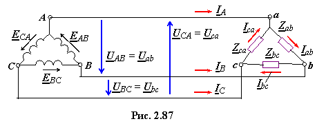
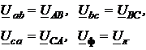
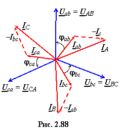
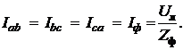
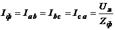
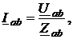
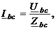
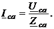

Пусть обмотки трёхфазного генератора и трёхфазный приёмник соединены по схеме треугольник
(схема соединения Δ) (рис. 2.87). Так как три ЭДС генератора равны по модулю и сдвинуты по фазе на 120° относительно друг друга, то сумма трёх комплексов ЭДС в замкнутом треугольнике А-В-С-A равна нулю, т.e. EAB + EBC + ECA = 0. Поэтому, если к зажимам А, В и С не присоединена нагрузка, то по обмоткам генератора не будет протекать ток.
Как видно из рис. 2.87, в такой схеме возможно только трёхпроводное соединение трёхфазного приёмника с генератором; последний может быть соединён звездой. Положительные направления линейных и фазных напряжений и токов в системе соединения Δ−Δ показаны на рис. 2.87.

Фазные напряжения приёмника, соединённого треугольником, равны соответствующим линейным напряжениям генератора:
 (2.152)
а фазные токи приёмника при симметричной нагрузке
 (2.153)
Согласно первому закону Кирхгофа для точек а, b, с (рис. 2.87) линейные токи:
(2.154)
При симметричной нагрузке как фазные, так и линейные токи составляют симметричные звёзды (рис. 2.88), а соотношение между ними
где  (2.155)
При несимметричной нагрузке фазные токи различны:
   (2.156)
Линейные токи рассчитывают по формулам (2.154). При несимметричной нагрузке линейные токи могут быть как больше, так и меньше фазных токов нагрузки. Заметим, что сумма комплексов линейных токов всегда равна нулю, т.е.
IA + IB + IC = 0. (2.157)